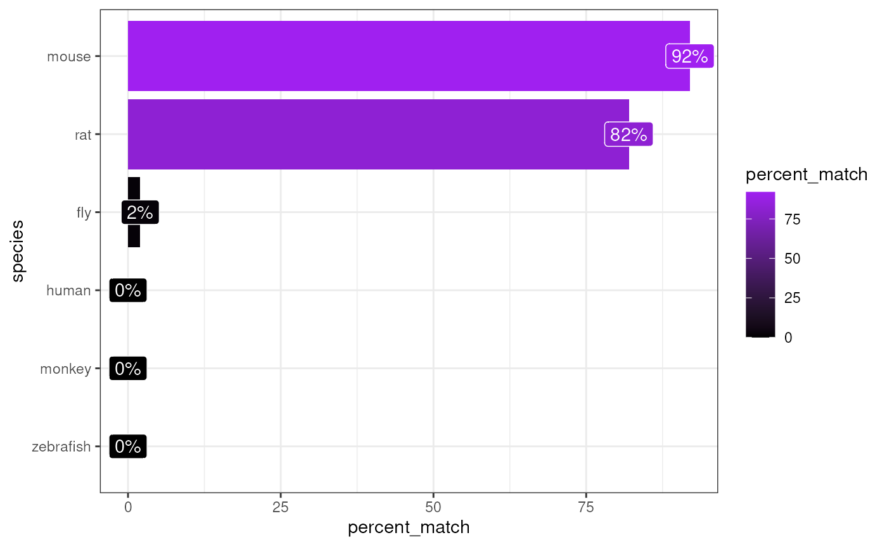

Infer species
Author: Brian M. Schilder
Most recent update: Oct-29-2021
Source: vignettes/infer_species.Rmd
infer_species.RmdInstallation
if (!requireNamespace("BiocManager", quietly = TRUE))
install.packages("BiocManager")
# orthogene is only available on Bioconductor>=3.14
if(BiocManager::version()<"3.14")
BiocManager::install(update = TRUE, ask = FALSE)
BiocManager::install("orthogene")Introduction
It’s not always clear whether a dataset is using the original species gene names, human gene names, or some other species’ gene names.
infer_species takes a list/matrix/data.frame with genes and infers the species that they best match to!
For the sake of speed, the genes extracted from gene_df are tested against genomes from only the following 6 test_species by default: - human - monkey - rat - mouse - zebrafish - fly
However, you can supply your own list of test_species, which will be automatically be mapped and standardised using map_species.
Examples
Mouse genes
Infer the species
matches <- orthogene::infer_species(gene_df = exp_mouse,
method = method)## Preparing gene_df.## sparseMatrix format detected.## Extracting genes from rownames.## 15,259 genes extracted.## Testing for gene overlap with: human## Retrieving all genes using: homologene.## Retrieving all organisms available in gprofiler.## Using stored `gprofiler_orgs`.## Mapping species name: human## Common name mapping found for human## 1 organism identified from search: 9606## Gene table with 19,129 rows retrieved.## Returning all 19,129 genes from human.## Testing for gene overlap with: monkey## Retrieving all genes using: homologene.## Retrieving all organisms available in gprofiler.## Using stored `gprofiler_orgs`.## Mapping species name: monkey## Common name mapping found for monkey## 1 organism identified from search: 9544## Gene table with 16,843 rows retrieved.## Returning all 16,843 genes from monkey.## Testing for gene overlap with: rat## Retrieving all genes using: homologene.## Retrieving all organisms available in gprofiler.## Using stored `gprofiler_orgs`.## Mapping species name: rat## Common name mapping found for rat## 1 organism identified from search: 10116## Gene table with 20,616 rows retrieved.## Returning all 20,616 genes from rat.## Testing for gene overlap with: mouse## Retrieving all genes using: homologene.## Retrieving all organisms available in gprofiler.## Using stored `gprofiler_orgs`.## Mapping species name: mouse## Common name mapping found for mouse## 1 organism identified from search: 10090## Gene table with 21,207 rows retrieved.## Returning all 21,207 genes from mouse.## Testing for gene overlap with: zebrafish## Retrieving all genes using: homologene.## Retrieving all organisms available in gprofiler.## Using stored `gprofiler_orgs`.## Mapping species name: zebrafish## Common name mapping found for zebrafish## 1 organism identified from search: 7955## Gene table with 20,897 rows retrieved.## Returning all 20,897 genes from zebrafish.## Testing for gene overlap with: fly## Retrieving all genes using: homologene.## Retrieving all organisms available in gprofiler.## Using stored `gprofiler_orgs`.## Mapping species name: fly## Common name mapping found for fly## 1 organism identified from search: 7227## Gene table with 8,438 rows retrieved.## Returning all 8,438 genes from fly.## Top match:
## - species: mouse
## - percent_match: 92%## Loading required namespace: hrbrthemes## You will likely need to install these fonts on your system as well.
##
## You can find them in [/__w/_temp/Library/hrbrthemes/fonts/roboto-condensed]
Rat genes
Create example data
To create an example dataset, turn the gene names into rat genes.
exp_rat <- orthogene::convert_orthologs(gene_df = exp_mouse,
input_species = "mouse",
output_species = "rat",
method = method)## Preparing gene_df.## sparseMatrix format detected.## Extracting genes from rownames.## 15,259 genes extracted.## Converting mouse ==> rat orthologs using: homologene## Retrieving all organisms available in gprofiler.## Using stored `gprofiler_orgs`.## Mapping species name: mouse## Common name mapping found for mouse## 1 organism identified from search: 10090## Retrieving all organisms available in gprofiler.## Using stored `gprofiler_orgs`.## Mapping species name: rat## Common name mapping found for rat## 1 organism identified from search: 10116## Checking for genes without orthologs in rat.## Extracting genes from input_gene.## 13,812 genes extracted.## Extracting genes from ortholog_gene.## 13,812 genes extracted.## Checking for genes without 1:1 orthologs.## Dropping 486 genes that have multiple input_gene per ortholog_gene.## Dropping 148 genes that have multiple ortholog_gene per input_gene.## Filtering gene_df with gene_map## Setting ortholog_gene to rownames.##
## =========== REPORT SUMMARY ===========## Total genes dropped after convert_orthologs :
## 2,322 / 15,259 (15%)## Total genes remaining after convert_orthologs :
## 12,937 / 15,259 (85%)Infer the species
matches <- orthogene::infer_species(gene_df = exp_rat,
method = method)## Preparing gene_df.## sparseMatrix format detected.## Extracting genes from rownames.## 12,937 genes extracted.## Testing for gene overlap with: human## Retrieving all genes using: homologene.## Retrieving all organisms available in gprofiler.## Using stored `gprofiler_orgs`.## Mapping species name: human## Common name mapping found for human## 1 organism identified from search: 9606## Gene table with 19,129 rows retrieved.## Returning all 19,129 genes from human.## Testing for gene overlap with: monkey## Retrieving all genes using: homologene.## Retrieving all organisms available in gprofiler.## Using stored `gprofiler_orgs`.## Mapping species name: monkey## Common name mapping found for monkey## 1 organism identified from search: 9544## Gene table with 16,843 rows retrieved.## Returning all 16,843 genes from monkey.## Testing for gene overlap with: rat## Retrieving all genes using: homologene.## Retrieving all organisms available in gprofiler.## Using stored `gprofiler_orgs`.## Mapping species name: rat## Common name mapping found for rat## 1 organism identified from search: 10116## Gene table with 20,616 rows retrieved.## Returning all 20,616 genes from rat.## Testing for gene overlap with: mouse## Retrieving all genes using: homologene.## Retrieving all organisms available in gprofiler.## Using stored `gprofiler_orgs`.## Mapping species name: mouse## Common name mapping found for mouse## 1 organism identified from search: 10090## Gene table with 21,207 rows retrieved.## Returning all 21,207 genes from mouse.## Testing for gene overlap with: zebrafish## Retrieving all genes using: homologene.## Retrieving all organisms available in gprofiler.## Using stored `gprofiler_orgs`.## Mapping species name: zebrafish## Common name mapping found for zebrafish## 1 organism identified from search: 7955## Gene table with 20,897 rows retrieved.## Returning all 20,897 genes from zebrafish.## Testing for gene overlap with: fly## Retrieving all genes using: homologene.## Retrieving all organisms available in gprofiler.## Using stored `gprofiler_orgs`.## Mapping species name: fly## Common name mapping found for fly## 1 organism identified from search: 7227## Gene table with 8,438 rows retrieved.## Returning all 8,438 genes from fly.## Top match:
## - species: rat
## - percent_match: 100%## You will likely need to install these fonts on your system as well.
##
## You can find them in [/__w/_temp/Library/hrbrthemes/fonts/roboto-condensed]Human genes
Create example data
To create an example dataset, turn the gene names into human genes.
exp_human <- orthogene::convert_orthologs(gene_df = exp_mouse,
input_species = "mouse",
output_species = "human",
method = method)## Preparing gene_df.## sparseMatrix format detected.## Extracting genes from rownames.## 15,259 genes extracted.## Converting mouse ==> human orthologs using: homologene## Retrieving all organisms available in gprofiler.## Using stored `gprofiler_orgs`.## Mapping species name: mouse## Common name mapping found for mouse## 1 organism identified from search: 10090## Retrieving all organisms available in gprofiler.## Using stored `gprofiler_orgs`.## Mapping species name: human## Common name mapping found for human## 1 organism identified from search: 9606## Checking for genes without orthologs in human.## Extracting genes from input_gene.## 13,416 genes extracted.## Extracting genes from ortholog_gene.## 13,416 genes extracted.## Checking for genes without 1:1 orthologs.## Dropping 46 genes that have multiple input_gene per ortholog_gene.## Dropping 56 genes that have multiple ortholog_gene per input_gene.## Filtering gene_df with gene_map## Setting ortholog_gene to rownames.##
## =========== REPORT SUMMARY ===========## Total genes dropped after convert_orthologs :
## 2,016 / 15,259 (13%)## Total genes remaining after convert_orthologs :
## 13,243 / 15,259 (87%)Infer the species
matches <- orthogene::infer_species(gene_df = exp_human,
method = method)## Preparing gene_df.## sparseMatrix format detected.## Extracting genes from rownames.## 13,243 genes extracted.## Testing for gene overlap with: human## Retrieving all genes using: homologene.## Retrieving all organisms available in gprofiler.## Using stored `gprofiler_orgs`.## Mapping species name: human## Common name mapping found for human## 1 organism identified from search: 9606## Gene table with 19,129 rows retrieved.## Returning all 19,129 genes from human.## Testing for gene overlap with: monkey## Retrieving all genes using: homologene.## Retrieving all organisms available in gprofiler.## Using stored `gprofiler_orgs`.## Mapping species name: monkey## Common name mapping found for monkey## 1 organism identified from search: 9544## Gene table with 16,843 rows retrieved.## Returning all 16,843 genes from monkey.## Testing for gene overlap with: rat## Retrieving all genes using: homologene.## Retrieving all organisms available in gprofiler.## Using stored `gprofiler_orgs`.## Mapping species name: rat## Common name mapping found for rat## 1 organism identified from search: 10116## Gene table with 20,616 rows retrieved.## Returning all 20,616 genes from rat.## Testing for gene overlap with: mouse## Retrieving all genes using: homologene.## Retrieving all organisms available in gprofiler.## Using stored `gprofiler_orgs`.## Mapping species name: mouse## Common name mapping found for mouse## 1 organism identified from search: 10090## Gene table with 21,207 rows retrieved.## Returning all 21,207 genes from mouse.## Testing for gene overlap with: zebrafish## Retrieving all genes using: homologene.## Retrieving all organisms available in gprofiler.## Using stored `gprofiler_orgs`.## Mapping species name: zebrafish## Common name mapping found for zebrafish## 1 organism identified from search: 7955## Gene table with 20,897 rows retrieved.## Returning all 20,897 genes from zebrafish.## Testing for gene overlap with: fly## Retrieving all genes using: homologene.## Retrieving all organisms available in gprofiler.## Using stored `gprofiler_orgs`.## Mapping species name: fly## Common name mapping found for fly## 1 organism identified from search: 7227## Gene table with 8,438 rows retrieved.## Returning all 8,438 genes from fly.## Top match:
## - species: human
## - percent_match: 100%## You will likely need to install these fonts on your system as well.
##
## You can find them in [/__w/_temp/Library/hrbrthemes/fonts/roboto-condensed]
Additional test_species
You can even supply test_species with the name of one of the R packages that orthogene gets orthologs from. This will test against all species available in that particular R package.
For example, by setting test_species="homologene" we automatically test for % gene matches in each of the 20+ species available in homologene.
matches <- orthogene::infer_species(gene_df = exp_human,
test_species = method)## Retrieving all organisms available in homologene.## Preparing gene_df.## sparseMatrix format detected.## Extracting genes from rownames.## 13,243 genes extracted.## Testing for gene overlap with: Mus musculus## Retrieving all genes using: homologene.## Retrieving all organisms available in gprofiler.## Using stored `gprofiler_orgs`.## Mapping species name: Mus musculus## 1 organism identified from search: 10090## Gene table with 21,207 rows retrieved.## Returning all 21,207 genes from Mus musculus.## Testing for gene overlap with: Rattus norvegicus## Retrieving all genes using: homologene.## Retrieving all organisms available in gprofiler.## Using stored `gprofiler_orgs`.## Mapping species name: Rattus norvegicus## 1 organism identified from search: 10116## Gene table with 20,616 rows retrieved.## Returning all 20,616 genes from Rattus norvegicus.## Testing for gene overlap with: Kluyveromyces lactis## Retrieving all genes using: homologene.## Retrieving all organisms available in gprofiler.## Using stored `gprofiler_orgs`.## Mapping species name: Kluyveromyces lactis## WARNING: No organisms identified matched 'kluyveromyces lactis' Try a different query.## Gene table with 0 rows retrieved.## Returning all 0 genes from Kluyveromyces lactis.## Testing for gene overlap with: Magnaporthe oryzae## Retrieving all genes using: homologene.## Retrieving all organisms available in gprofiler.## Using stored `gprofiler_orgs`.## Mapping species name: Magnaporthe oryzae## 1 organism identified from search: 242507## Gene table with 0 rows retrieved.## Returning all 0 genes from Magnaporthe oryzae.## Testing for gene overlap with: Eremothecium gossypii## Retrieving all genes using: homologene.## Retrieving all organisms available in gprofiler.## Using stored `gprofiler_orgs`.## Mapping species name: Eremothecium gossypii## 1 organism identified from search: 284811## Gene table with 0 rows retrieved.## Returning all 0 genes from Eremothecium gossypii.## Testing for gene overlap with: Arabidopsis thaliana## Retrieving all genes using: homologene.## Retrieving all organisms available in gprofiler.## Using stored `gprofiler_orgs`.## Mapping species name: Arabidopsis thaliana## 1 organism identified from search: 3702## Gene table with 19,143 rows retrieved.## Returning all 19,143 genes from Arabidopsis thaliana.## Testing for gene overlap with: Oryza sativa## Retrieving all genes using: homologene.## Retrieving all organisms available in gprofiler.## Using stored `gprofiler_orgs`.## Mapping species name: Oryza sativa## 2 organisms identified from search.
## Selecting first:
## - 39946
## - 39947## Gene table with 0 rows retrieved.## Returning all 0 genes from Oryza sativa.## Testing for gene overlap with: Schizosaccharomyces pombe## Retrieving all genes using: homologene.## Retrieving all organisms available in gprofiler.## Using stored `gprofiler_orgs`.## Mapping species name: Schizosaccharomyces pombe## 1 organism identified from search: 284812## Gene table with 0 rows retrieved.## Returning all 0 genes from Schizosaccharomyces pombe.## Testing for gene overlap with: Saccharomyces cerevisiae## Retrieving all genes using: homologene.## Retrieving all organisms available in gprofiler.## Using stored `gprofiler_orgs`.## Mapping species name: Saccharomyces cerevisiae## 1 organism identified from search: 4932## Gene table with 4,579 rows retrieved.## Returning all 4,579 genes from Saccharomyces cerevisiae.## Testing for gene overlap with: Neurospora crassa## Retrieving all genes using: homologene.## Retrieving all organisms available in gprofiler.## Using stored `gprofiler_orgs`.## Mapping species name: Neurospora crassa## 1 organism identified from search: 367110## Gene table with 0 rows retrieved.## Returning all 0 genes from Neurospora crassa.## Testing for gene overlap with: Caenorhabditis elegans## Retrieving all genes using: homologene.## Retrieving all organisms available in gprofiler.## Using stored `gprofiler_orgs`.## Mapping species name: Caenorhabditis elegans## 2 organisms identified from search.
## Selecting first:
## - 6239
## - 6239## Gene table with 7,575 rows retrieved.## Returning all 7,575 genes from Caenorhabditis elegans.## Testing for gene overlap with: Anopheles gambiae## Retrieving all genes using: homologene.## Retrieving all organisms available in gprofiler.## Using stored `gprofiler_orgs`.## Mapping species name: Anopheles gambiae## 1 organism identified from search: 7165## Gene table with 8,428 rows retrieved.## Returning all 8,428 genes from Anopheles gambiae.## Testing for gene overlap with: Drosophila melanogaster## Retrieving all genes using: homologene.## Retrieving all organisms available in gprofiler.## Using stored `gprofiler_orgs`.## Mapping species name: Drosophila melanogaster## 1 organism identified from search: 7227## Gene table with 8,438 rows retrieved.## Returning all 8,438 genes from Drosophila melanogaster.## Testing for gene overlap with: Danio rerio## Retrieving all genes using: homologene.## Retrieving all organisms available in gprofiler.## Using stored `gprofiler_orgs`.## Mapping species name: Danio rerio## 1 organism identified from search: 7955## Gene table with 20,897 rows retrieved.## Returning all 20,897 genes from Danio rerio.## Testing for gene overlap with: Xenopus (Silurana) tropicalis## Retrieving all genes using: homologene.## Retrieving all organisms available in gprofiler.## Using stored `gprofiler_orgs`.## Mapping species name: Xenopus (Silurana) tropicalis## Warning in grepl(spec_queries, display_name, ignore.case = TRUE): TRE pattern
## compilation error 'Missing ')''## Testing for gene overlap with: Gallus gallus## Retrieving all genes using: homologene.## Retrieving all organisms available in gprofiler.## Using stored `gprofiler_orgs`.## Mapping species name: Gallus gallus## 1 organism identified from search: 9031## Gene table with 14,600 rows retrieved.## Returning all 14,600 genes from Gallus gallus.## Testing for gene overlap with: Macaca mulatta## Retrieving all genes using: homologene.## Retrieving all organisms available in gprofiler.## Using stored `gprofiler_orgs`.## Mapping species name: Macaca mulatta## 1 organism identified from search: 9544## Gene table with 16,843 rows retrieved.## Returning all 16,843 genes from Macaca mulatta.## Testing for gene overlap with: Pan troglodytes## Retrieving all genes using: homologene.## Retrieving all organisms available in gprofiler.## Using stored `gprofiler_orgs`.## Mapping species name: Pan troglodytes## 1 organism identified from search: 9598## Gene table with 18,730 rows retrieved.## Returning all 18,730 genes from Pan troglodytes.## Testing for gene overlap with: Homo sapiens## Retrieving all genes using: homologene.## Retrieving all organisms available in gprofiler.## Using stored `gprofiler_orgs`.## Mapping species name: Homo sapiens## 1 organism identified from search: 9606## Gene table with 19,129 rows retrieved.## Returning all 19,129 genes from Homo sapiens.## Testing for gene overlap with: Canis lupus familiaris## Retrieving all genes using: homologene.## Retrieving all organisms available in gprofiler.## Using stored `gprofiler_orgs`.## Mapping species name: Canis lupus familiaris## 1 organism identified from search: 9615## Gene table with 18,117 rows retrieved.## Returning all 18,117 genes from Canis lupus familiaris.## Testing for gene overlap with: Bos taurus## Retrieving all genes using: homologene.## Retrieving all organisms available in gprofiler.## Using stored `gprofiler_orgs`.## Mapping species name: Bos taurus## 2 organisms identified from search.
## Selecting first:
## - 30522
## - 9913## Gene table with 0 rows retrieved.## Returning all 0 genes from Bos taurus.## Top match:
## - species: Homo sapiens
## - percent_match: 100%## You will likely need to install these fonts on your system as well.
##
## You can find them in [/__w/_temp/Library/hrbrthemes/fonts/roboto-condensed]Session Info
utils::sessionInfo()## R version 4.1.1 (2021-08-10)
## Platform: x86_64-pc-linux-gnu (64-bit)
## Running under: Ubuntu 20.04.3 LTS
##
## Matrix products: default
## BLAS/LAPACK: /usr/lib/x86_64-linux-gnu/openblas-pthread/libopenblasp-r0.3.8.so
##
## locale:
## [1] LC_CTYPE=en_US.UTF-8 LC_NUMERIC=C
## [3] LC_TIME=en_US.UTF-8 LC_COLLATE=en_US.UTF-8
## [5] LC_MONETARY=en_US.UTF-8 LC_MESSAGES=C
## [7] LC_PAPER=en_US.UTF-8 LC_NAME=C
## [9] LC_ADDRESS=C LC_TELEPHONE=C
## [11] LC_MEASUREMENT=en_US.UTF-8 LC_IDENTIFICATION=C
##
## attached base packages:
## [1] stats graphics grDevices utils datasets methods base
##
## other attached packages:
## [1] orthogene_1.1.2 BiocStyle_2.22.0
##
## loaded via a namespace (and not attached):
## [1] fs_1.5.0 httr_1.4.2
## [3] rprojroot_2.0.2 tools_4.1.1
## [5] backports_1.3.0 bslib_0.3.1
## [7] utf8_1.2.2 R6_2.5.1
## [9] lazyeval_0.2.2 colorspace_2.0-2
## [11] tidyselect_1.1.1 curl_4.3.2
## [13] compiler_4.1.1 extrafontdb_1.0
## [15] textshaping_0.3.6 cli_3.1.0
## [17] desc_1.4.0 plotly_4.10.0
## [19] labeling_0.4.2 bookdown_0.24
## [21] sass_0.4.0 scales_1.1.1
## [23] pkgdown_1.9000.9000.9000 systemfonts_1.0.3
## [25] stringr_1.4.0 digest_0.6.28
## [27] foreign_0.8-81 rmarkdown_2.11
## [29] rio_0.5.27 pkgconfig_2.0.3
## [31] htmltools_0.5.2 extrafont_0.17
## [33] highr_0.9 fastmap_1.1.0
## [35] htmlwidgets_1.5.4 rlang_0.99.0.9000
## [37] readxl_1.3.1 farver_2.1.0
## [39] jquerylib_0.1.4 generics_0.1.1
## [41] jsonlite_1.7.2 dplyr_1.0.7
## [43] zip_2.2.0 car_3.0-11
## [45] homologene_1.4.68.19.3.27 magrittr_2.0.1
## [47] GenomeInfoDbData_1.2.7 patchwork_1.1.1
## [49] Matrix_1.3-4 Rcpp_1.0.7
## [51] munsell_0.5.0 fansi_0.5.0
## [53] gdtools_0.2.3 abind_1.4-5
## [55] babelgene_21.4 lifecycle_1.0.1
## [57] stringi_1.7.5 yaml_2.2.1
## [59] carData_3.0-4 grid_4.1.1
## [61] hrbrthemes_0.8.0 parallel_4.1.1
## [63] forcats_0.5.1 crayon_1.4.1
## [65] lattice_0.20-45 haven_2.4.3
## [67] hms_1.1.1 knitr_1.36
## [69] pillar_1.6.4 ggpubr_0.4.0
## [71] ggsignif_0.6.3 glue_1.4.2
## [73] gprofiler2_0.2.1 evaluate_0.14
## [75] data.table_1.14.2 BiocManager_1.30.16
## [77] vctrs_0.3.8 Rttf2pt1_1.3.9
## [79] cellranger_1.1.0 gtable_0.3.0
## [81] purrr_0.3.4 tidyr_1.1.4
## [83] cachem_1.0.6 ggplot2_3.3.5
## [85] xfun_0.27 openxlsx_4.2.4
## [87] broom_0.7.9 rstatix_0.7.0
## [89] ragg_1.1.3 viridisLite_0.4.0
## [91] tibble_3.1.5 memoise_2.0.0
## [93] ellipsis_0.3.2